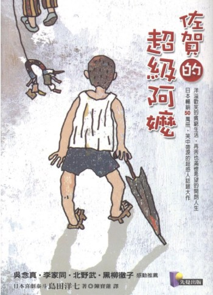

|
這本《佐賀的超級阿嬤》，表面上是在述說一個小孩在鄉下長大的故事，但實際閱讀，你會發現它講的不是「怎麼脫離貧窮」，而是在告訴你「就算很普通、甚至條件不好，也可以讓自己生活得很不錯」。 故事一開始，昭廣因為家裡經濟狀況不好，被送到佐賀，與阿嬤一起生活。從都市跑到鄉下，環境落差很大，但最讓人印象深刻的不是他有多苦，而是阿嬤怎麼過日子。 其中最經典的情節，是阿嬤在河邊綁竹竿。原本以為她是在釣魚，但其實不是，她是讓上游沖下來的菜、蘿蔔、甚至一些可以用的東西卡在竹竿上，再拿回家用。她還很得意地說，這就像「上游的人幫我們準備食物」。 這一段第一次看會覺得很好笑，但若發自內心去仔細想，其實思考面向邏輯很有智慧。同樣是資源不夠，有人會以負面去想就覺得倒楣，但有人卻會以正面思考想辦法讓它變成融入生活的一部分。 書中內容有一段是在講別的小孩都有便當，看起來很豐盛，昭廣難免會羨慕。但阿嬤幫他準備的便當裡，並沒有什麼高級的料理，只是一些簡單的食物。她沒有想要跟別人比，而是很自然地告訴他：「吃飽比較重要。」這種務實態度，其實很真實。現實生活中很多時候，我們會因為面子做比較，讓自己變得很有壓力，但阿嬤反而是把重點抓得很清楚。 另一個讓我很有印象的地方，是阿嬤對「沒錢」的解釋。她不會直接說自己窮，而是會轉換一種講法，比如說「我們是節約型生活」、「這也是一種訓練」。聽起來像在開玩笑，但其實是在保護一種尊嚴。她沒有讓自己活在自卑裡，而是很自然地接受現況。 在衣服穿著的部分。昭廣的衣服常常是補過又補，甚至從不同衣服剪下來再縫在一起，樣子其實不好看。但阿嬤不會覺得不好意思，反而覺得「還能穿就好」。這種觀念放到現在，其實蠻衝突的，因為現在很強調外表、品牌，但看了這一段會覺得，有時候我們是不是把太多注意力放在「看起來怎麼樣」，而忽略了「衣服最原始本來的功能和用途」。 書裡還有一段最讓人很有感的，是昭廣去上學的時候，鞋子常常壞掉或不合腳，但他還是照樣跑步、上課，也沒有一直抱怨。當然，心裡多少會在意，但阿嬤總是用很輕鬆的方式帶過，讓事情不要變成一種壓力。這其實跟很多人的成長經驗很像，外在條件未必很好，但那種「反正就繼續過」的韌性，讓人更能適應環境。 阿嬤也很重視「精神」這件事。她不太在意成績，但很在意做人做事的態度。她會跟昭廣說，不用一定要第一名，但要有精神、有骨氣，做事情不要隨便。這種教育方式，其實現在回頭看都會覺得很有力量。因為很多東西不是短時間看得出來的，而是會慢慢影響一個人變成什麼樣子。 最讓我覺得特別的一點，就是阿嬤真的很會用幽默去化解困境。像是家裡東西不夠，她就會講成「今天吃健康一點」；沒有錢買什麼，她就會說「這樣比較不浪費」。聽起來像是在自我安慰，但其實那是一種調整心態的能力。 看到書裡寫的這些情節，會很自然想到自己平常的生活。在很多時候，條件其實沒有差到哪裡，但事情只要一有開始比較，就會讓人很容易覺得不夠。像看到別人過得比較好，就開始懷疑自己；或者覺得應該要再多一點，才算成功。 但是阿嬤的生活完全不是這樣。她沒有在追求「變得跟別人一樣」，而是把自己的日子過好。她知道自己的條件是什麼，也沒有想要否認，但她會用自己的方式，讓生活過得平安順心，甚至還可以笑得出來。 這本書讓我反覆思考：到底什麼才叫「過得好」？是賺很多錢滿足物質生活嗎？還是不用擔心吃喝？還是可以財富自由照自己的方式過日子？ 讀完之後，反而覺得答案變簡單了。 過得好，可能就是每天生活雖然普通，但心裡不會一直覺得缺什麼，也不會因為別人的標準而讓自己很累。 書裡的故事沒有很誇張，也沒有什麼大轉折，但就是這種日常的小事，累積起來反而很有力量。像河邊撿東西、補衣服、運動會便當、上學生活，這些看起來很普通，但讓人感覺到是一種更務實的生活方式。 如果要說這本書帶給我的最大感覺就是把日子過好，不是靠條件，而是靠你怎麼看待自己手上擁有的東西。 這本書讀完的重點，提醒我們日常生活中，有時候不是我們擁有的不夠多，只是我們自己一直仍覺得不夠。
 書本標題：佐賀的超級阿嬤 |
《佐賀的超級阿嬤》
簡志銘│業務處＼客戶服務部